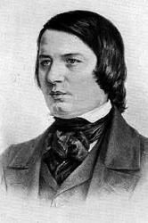

|
|
|
|
NIL |
1.今日是主设立为圣，我当遵守来得安宁，
|
|
CANONBURY https://hymnary.org/hymn/GG2013/page/896
|
|
|
|
|


Lord, Speak to Me, that I May Speak (Canonbury) https://youtu.be/7mLa0Z2YM4U
| Tune: | CANONBURY |
| Composer: | Robert Schumann |
Tune Information
| Title: | CANONBURY |
| Composer: | Robert Schumann (1839) |
| Meter: | 8.8.8.8 |
| Incipit: | 53334 32123 56712 |
| Key: | G Major |
| Source: | Nachtstücke, No 4 |
| Copyright: | Public Domain |
| Short Name: | Robert Schumann |
| Full Name: | Schumann, Robert, 1810-1856 |
| Birth Year: | 1810 |
| Death Year: | 1856 |
Robert Alexander Schumann DM Germany 1810-1856.

Born at Swickau, Saxony, Germany, the last child of a novelist, bookseller, and publisher, he began composing music at age seven. He received general music instruction at the local high school and worked to create his own compositions. Some of his works were considered admirable for his age. He even composed music congruent to the personalities of friends, who took note of the anomaly. He studied famous poets and philosophers and was impressed with the works of other famous composers of the time. After his father’s death in 1826, he went to Leipzig to study law (to meet the terms of his inheritance). In 1829 he continued law studies in Heidelberg, where he became a lifelong member of Corps Saxo-Borussia Heidelberg. In 1830 he left the study of law to return to music, intending to pursue a career as a virtuoso pianist. His teacher, Friedrich Wieck, assured him he could become the finest pianist in Europe, but an injury to his right hand (from a practicing method) ended that dream. He then focused his energies on composition, and studied under Heinrich Dorn, a German composer and conductor of the Leipzig opera. Schumann visited relatives in Zwickau and Schneeberg and performed at a concert given by Clara Wieck, age 13 at the time. In 1834 he published ‘A new journal for music’, praising some past composers and deriding others. He met Felix Mendelssohn at Wieck’s house in Leigzig and lauded the greatness of his compositions, along with those of Johannes Brahms. He also wrote a work, hoping to use proceeds from its sale towards a monument for Beethoven, whom he highly admired. He composed symphonies, operas, orchestral and chamber works, and also wrote biographies. Until 1840 he wrote strictly for piano, but then began composing for orchestra and voice. That year he composed 168 songs. He also receive a Doctorate degree from the University of Jena that year. An aesthete and influential music critic, he was one of the most regarded composers of the Romantic era. He published his works in the ‘New journal for music’, which he co-founded. In 1840, against the wishes of his father, he married Clara Wieck, daughter of his former teacher, and they had four children: Marie, Julie, Eugenie, and Felix. Clara also composed music and had a considerable concert career, the earnings from which formed a substantial part of her father’s fortune. In 1841 he wrote 2 of his 4 symphonies. In 1843 he was awarded a professorship in the Conservatory of Music, which Mendelssohn had founded in Leipzig that same year, When he and Clara went to Russia for her performances, he was questioned as to whether he also was a musician. He harbored resentment for her success as a pianist, which exceeded his ability as a pianist and reputation as a composer. From 1844-1853 he was engaged in setting Goethe’s Faust to music, but he began having persistent nervous prostration and developed neurasthenia (nervous fears of things, like metal objects and drugs). In 1846 he felt he had recovered and began traveling to Vienna, Prague, and Berlin, where he was received with enthusiasm. His only opera was written in 1848, and an orchestral work in 1849. In 1850 he succeeded Ferdinand Hiller as musical director at Dusseldorf, but was a poor conductor and soon aroused the opposition of the musicians, claiming he was impossible on the platform. From 1850-1854 he composed a wide variety of genres, but critics have considered his works during this period inferior to earlier works. In 1851 he visited Switzerland, Belgium, and returned to Leipzig. That year he finished his fourth symphony. He then went to Dusseldorf and began editing his complete works and making an anthology on the subject of music. He again was plagued with imaginary voices (angels, ghosts or demons) and in 1854 jumped off a bridge into the Rhine River, but was rescued by boatmen and taken home. For the last two years of his life, after the attempted suicide, Schumann was confined to a sanitarium in Endenich near Bonn, at his own request, and his wife was not allowed to see him. She finally saw him two days before he died, but he was unable to speak. He was diagnosed with psychotic melancholia, but died of pneumonia without recovering from the mental illness. Speculations as to the cause of his late term maladies was that he may have suffered from syphilis, contracted early in life, and treated with mercury, unknown as a neurological poison at the time. A report on his autopsy said he had a tumor at the base of the brain. It is also surmised he may have had bipolar disorder, accounting for mood swings and changes in his productivity. From the time of his death Clara devoted herself to the performance and interpretation of her husband’s works.
John Perry
Notes
Derived from the fourth piano piece in Robert A. Schumann's Nachtstücke, Opus 23 (1839), CANONBURY first appeared as a hymn tune in J. Ireland Tucker's Hymnal with Tunes, Old and New (1872). The tune, whose title refers to a street and square in Islington, London, England, is often matched to Havergal's text.
CANONBURY has a simple binary form, which consists of two versions of the same long melody. Sing in parts, ideally with a sense of two long lines rather than four choppy phrases, possibly with a fermata at the end of the first long line.
Robert Schumann (b. Zwickau, Saxony, Germany, 1810; d. Endenich, near Bonn, Germany, 1856) wrote no hymn tunes himself, though a few of his lyrical melodies were adapted into hymn tunes by hymnal editors. One of the greatest musicians of the Romantic period, Schumann did not at first seem destined for a musical career. Although he was a precocious piano player, his mother and his guardian insisted that he study for a legal career. From 1828 to 1830 he studied law at Leipzig and Heidelberg Universities, but much of his time was consumed with music and poetry. From 1830 until his death Schumann devoted his life to music. After a finger injury terminated his concert career as a pianist in 1832, he turned completely to composition. Schumann composed successfully in many genres but became especially famous for his piano works and song cycles. In 1840 he married Clara Wieck, whom he had known since 1828; she was a famous pianist and composer in her own right who inspired many of Schumann's songs. He suffered from depression for much of his adult life and in 1854 after an unsuccessful suicide attempt, was admitted to a mental institution, where he later died. Schumann founded the magazine Neue Zeitschrift für Musik and edited it for ten years.
--Psalter Hymnal Handbook, 1988

聖詩版本： 聖詩(2009) ( Sèng-si 2009 ) 分類： 普世子民的團契 教會敬拜:聚集敬拜
|
||||||||||||||||||||||
| http://hymn.pct.org.tw/Hymn.aspx?PID=P2011102400006 |
59 上帝設立七天中的哪一天為每周的安息日呢？
答：從創世之初到基督復活，上帝設立一周的第七天為每周的安息日；基督復活之後，一周的第一天為每周的安息日直至世界末日。這就是基督徒的安息日。
1：上帝從什麼時候設立一周的第七天為每周的安息日？
答：從創世之初，創2:2,3（到第七日，神造物的工已經完畢，就在第七日歇了他一切的工，安息了。神賜福給第七日，定為聖日，因為在這日神歇了他一切創造的工，就安息了）。
2：為什麼說自創世之初，而不是等到第六天人類這“管理海里的魚, 空中的鳥，地上的牲畜，和全地，並地上所爬的一切昆蟲”(創世紀
1:26)的主人被創造，等到創造之功完全結束之後呢？
答：因為直到創世的工作結束，世界的各個部分才開始正常運轉，並不是等到人類這“世界的管理者被創造。”創世紀
1:26（神說，我們要照着我們的形像，按着我們的樣式造人，使他們管理海里的魚，空中的鳥，地上的牲畜，和全地，並地上所爬的一切昆蟲）。
3：一周的第七天或最後一天被設立為每周的安息日多久呢？
答：直到基督復活。馬太福音28:1（安息日將盡，七日的頭一日，天快亮的時候，抹大拉的馬利亞，和那個馬利亞，來看墳墓）。
4：自那時，神設定一周的哪一天為安息日呢？
答：一周的第一天, 使徒行傳 20:7（七日的第一日，我們聚會掰餅的時候，保羅因為要次日起行，就與他們講論，直講到半夜）。
5：一周的第一天被設定為安息日多久呢？
答：直到世界末日。
6：我們怎樣確定這一天的設立直到世界末日呢？
答：我向一切聽見這書上預言的作見證，若有人在這預言上加添什麼，神必
將寫在這書上的災禍加在他身上；這書上的預言，若有人刪去什麼，神必從這書上所寫的生命樹和聖城刪去他的份，啟示錄22:18,19（我向一切聽見這書上預言的作見證，若有人在這預言上加添什麼，神必將寫在這書上的災禍加在他身上。這書上的預言，若有人刪去什麼，神必從這書上所寫的生命樹，和聖城，刪去他的分）。
7：為什麼稱一周的第一天基督教安息日?
答：因為它是由基督設立的，自耶穌復活后所有基督徒都遵守的日子。
8：所有的敬拜儀式難道都不是從道德律的角度來約束的？
答：是的，若不是如此，神的律法就不能完全，正如詩篇19章七節所記，“耶和華的律法全備，能蘇醒人心；耶和華的法度確定，能使愚人有智慧。”
9： 從那一條道德律，一周的第一天所有基督徒的都應遵守？
答：根據第四誡命，就是敬拜儀式，也是按照新約聖經，需要遵守第二誡命。
10： 關於一周的第一天，第四誡命沒有特別地提到，為什麼要遵守呢？
答：安息日的道德性並不基於創世順序的第七天，這第七天由神自己決定並設立；它可以是一周的第一天也可以是最後一天。
11：舊約哪裡對基督教的安息日曾發過預言？
答：以第八天的名義，“滿了七日，自八日以後，祭司要在壇上獻你們的燔祭和平安祭；我必悅納你們。這是主耶和華說的。”以西結書43:27。
12：為什麼說是第八天？
答：因為現在一周的第一天是創世后的第八天。
13：改變安息日最直接的原因是什麼？
答：是出於掌全權的主的美意，因他是“安息日的主”，可2:28。
14：這次改變的動因是什麼？
答：基督在“七日的第一日清晨”（可16:9）從死里復活。
15：為什麼要設立基督復活的那一天為安息日？
答：因為他的復活就是一個證據，顯明基督完成了救贖的偉大工作，羅1:4（按聖善的靈說，因從死里復活，以大能顯明是神的兒子）。因此這天就是他的安息日。如希伯來書
4:10所記：“因為那進入安息的，乃是歇了自己的工，正如神歇了他的工一樣。”
16：為什麼不把基督道成肉身或受難日設立為安息日呢？
答：因為這两天都是基督飽受勞苦和憂傷的日子，是他在進入安息之前必須要承受的，路24:26（基督這樣受害，又進入他的榮耀，豈不是應當的嗎？）。基督道成肉身，降生，開始了他偉大的工作，加4:4,5（及至時候滿足，神就差遣他的兒子，為女子所生，且生在律法以下，要把律法以下的人贖出來，叫我們得著兒子的名分）。在基督的受苦中，他承受了肉體極大的勞作之苦，他的心靈也憂傷到極處,
無法訴說，太26:38（便對他們說，我心�堿えO憂傷，幾乎要死。你們在這�媯平唌A和我一同儆醒）。
17：為什麼沒有設立他升天的日子和復活的日子都為安息日呢？
答：因為在他升天的那日，他只是進入了安息之地，即第三層天。在他復活那日，他進入了安息狀態。對比安息的狀態來說，安息之地只是一種環境。
18：為什麼上帝要改變自己安息的日子？
答：因為據創6:6（耶和華就後悔造人在地上，心中憂傷），他創世之後的安息，被人的罪毀壞，玷污；據約17:23（我在他們�堶情A你在我�堶情A使他們完完全全的合而為一。叫世人知道你差了我來，也知道你愛他們如同愛我一樣），在基督復活后，他進入完成救贖之工的安息，在這安息中，他享有永恆不變的喜悅。並且救贖是比創造更偉大卓越的工作。
19：聖經中是如何顯明安息日從一周的最後一天改變到一周的第一天？
答：例如我們的主耶穌，復活后照例在一周的第一天見他的門徒；升天之後，也是在那天將聖靈澆灌下來；
新約中記載的使徒和早期基督徒的事迹也告訴我們，一周的第一天而不是其他的日子，被尊崇為公眾敬拜的日子；使徒命令（教會）遵守這天而不是其他的日子為安息日；唯獨這一天被稱為“主日”。那麼毫無疑問，這一天就是神設立的基督徒安息日。
20：怎樣看出來我們的主在他復活之後，照例在一周的第一天會見他的門徒們呢？
答：有兩處可看出：約20:19,26有明確的記載（19那日，（就是七日的第一日）晚上，門徒所在的地方，因怕猶太人，門都關了。耶穌來站在當中，對他們說，願你們平安。26過了八日，門徒又在屋裡，多馬也和他們同在，門都關了。耶穌來站在當中說，願你們平安），第24節（那十二個門徒中，有稱為低土馬的多馬。耶穌來的時候，他沒有和他們同在），
在耶穌復活的那日（七日的第一日）的晚上，他會見了門徒。耶穌到來時，多馬並沒有和他們同在。第26節，八日之後，即：同一天，耶穌再次出現早門徒面前，而“門徒又在屋裡，多馬也和他們同在。”從這�堿搘X，在耶穌復活后在世上的40天中，按照慣例會見門徒。
21：從哪裡看出，基督升天後在眾人面前澆灌下他的聖靈呢？
答：從徒2:1-5可以看出，“五旬節到了，門徒都聚集在一處，忽然，從天上有響聲下來，他們就都被聖靈充滿。”
22：五旬節是那一天？
答：逾越節過後的第50天，按照民數記第28章26節，就是獻新素祭給耶和華的日子。
23：怎樣證明這天就是七天的第一天呢？
答：從利23:16（到第七個安息日的次日，共計五十天，又要將新素祭獻給耶和華），到第七個安息日的次日，也就是第五十，即五旬節，可以去確定的是猶太人安息日的次日肯定是七日的第一天。
24：從使徒和早期基督徒的事例中，怎樣可以看出一周的第一天而不是其他的日子被尊崇為公眾敬拜的日子？
答：在徒20:7——“七日的第一日，我們聚會擘餅的時候，保羅因為要次日起行，就與他們講論。”顯而易見，門徒們會定期在七天的第一天相聚，來領受神的話語，慶祝聖餐禮儀。不是使徒叫他們，而是他們自己相聚在一起擘餅，保羅也是在種情形下，向門徒佈道。
25：上下文怎樣印證使徒們在七天的第一天定期相聚進行公眾敬拜？
答：從以下這點得到印證，在徒20:7中“保羅和他們相會，在那裡住了七天。”但他們沒有在這七日中的任何一日講論，擘餅，一直到一周的第一天才開始，這很清楚地說明他們視這一天為安息日，而對一周的第七天或者說最後一天絲毫都沒有提及。
26：在徒13:14（他們離了別加往前行，來到彼西底的安提阿。在安息日進會堂坐下）中我們不是讀到保羅在安息日猶太教會堂佈道，那麼理所當然應該是猶太的安息日或作七天的最後一天，對嗎？
答：他只是偶爾在猶太人的安息日佈道，宣講福音的真理，因為那是猶太人聚在一起的時候，但並沒有把這天設立為公共敬拜的日子。
27：對於遵守七天的第一天而不是其他的日子為安息敬拜，使徒的命令是什麼？
答：在林前16:1－2中——“論到為聖徒捐錢，我從前怎樣吩咐加拉太的眾教會，你們也當怎樣行。每逢七日的第一日，各人要照自己的進項抽出來留着，免得我來的時候現湊。”
28：我們從這段經文中怎麼可以證明使徒命令遵守七天的第一天為基督徒的安息日？
答：可以按照這樣理解：捐給貧窮人們的錢明確規定在七天的第一天捐出，理所當然地，基督徒在那天應該聚會來做這項事工和其他安息日的侍奉。
29：但這有沒可能只是一個專門針對哥林多教會的暫時的命令？
答：經文中的話語清楚明確地表明，這項誡命也適用於加拉太眾教會，因為按照林前1:2，使徒不僅寫信給哥林多教會，而且是“所有在各處求告我耶穌基督之名的人。”
30：在新約中哪個地方有提到被尊崇為主日的那天？
答：在啟1:10約翰說“當主日，我被聖靈感動。”
31：怎樣證明七日的第一日是主日呢？
答：通過以下兩點：（一）除了第一日沒有其他的日子可以被稱之主日；（二）稱這天為主日是因為基督為了自己的榮耀和事工，使這一天為聖。
32：為什麼只有七日的第一日，其它的日子不能被稱作主日呢？
答：因為除了提到安息日醫病以外，關於基督的一切作為福音書里沒有提到過發生在哪一天，唯有提到他在七日的第一日復活；傳福音的（使徒們）也一致肯定這一天是主日。
33：為什麼說基督為了自己的榮耀和事工，榮耀七天的第一日為主日？
答：七日的最後一天安息日稱為神的安息，由神作為創世主所設立；七日的第一天稱為主日，由基督作為救贖主所設立；按照林前10:21（你們不能喝主的杯，又喝鬼的杯。不能吃主的筵席，又吃鬼的筵席）和11:20（你們聚會的時候，算不得吃主的晚餐），餅和酒的聖餐被稱為主餐是因為那是他自己設立的聖禮；所以稱七天的第一天為主日也完全是同樣的原因。
34：若沒有得到基督的親自指示，使徒會遵守勸告我們守七日的第一日為安息日嗎？
答：當然不會，在基督受難后，徒1:3（他受害之後，用許多的憑據，將自己活活地顯給使徒看，四十天之久向他們顯現，講說神國的事）中告訴我們，他講說神國的事，他所講的一定包括安息日從七天的最後一天改到到七天的第一天，
因為這絕不是小事。根據林前11:23（我當日傳給你們的，原是從主領受的，就是主耶穌被賣的那一夜，拿起餅來），
我們可以確定，使徒傳講給教會的沒有別的，都是從主那裡領受的。
https://biblepro.app/cbook/wsmsdxylwdsy-tw/59.html
【太十二1】「那時，耶穌在安息日，從麥地經過；祂的門徒餓了，就掐起麥穗來喫。」
﹝背景註解﹞「安息日」：即一週的第七日，等於現在的星期六，自星期五日落時分開始，至次日日落時分結束。神定此日為聖日(創二3)，不准以色列人作工，以記念神完成創造之工(出廿8~11)。
根據摩西律法，用手摘麥穗吃是可以的(申廿三25)，但在安息日可否摘麥穗，並無明文規定。故有一說，法利賽人所反對的，並不是在安息日摘麥穗吃，而是反對主的門徒用手『搓麥穗』，因這算是作工，觸犯安息日的規條。
﹝文意註解﹞「那時」：是指主耶穌呼召人來得安息之時(太十一28)。
﹝靈意註解﹞「耶穌在安息日，從麥地經過；祂的門徒餓了，就掐起麥穗來喫」：按理，人們在『安息日』，應該有安息才對，但是門徒們的『餓了』，卻表明他們在安息日沒有安息。這是一幅寫意圖畫，說出在宗教規條下的人們，得不著真安息。主耶穌故意在安息日帶領饑餓的門徒經過麥地，並容許他們『掐起麥穗來吃』，用意在指引宗教徒，認識並轉向祂這位舊約豫表的實際(西二16~17)。
﹝話中之光﹞(一)人得不著飽足，就沒有安息；人要得安息，就須享受基督作我們生命的糧(約六35)。
(二)「麥穗」豫表基督；基督為我們經過苦難和折磨(「掐」)，才成為我們的享受。
(三)饑餓的人才能得飽美食(路一53)；我們需要有屬靈的饑渴，才能從主得著飽足。
(四)主耶穌是第一粒麥子，我們蒙恩的人是許多子粒(約十二24)，所以教會乃是「麥地」。如果教會只注重規條、儀式，就恐怕大家都要挨餓；在教會中，最重要的是基督自己，祂怎樣帶領，我們就怎樣跟從。
【太十二2】「法利賽人看見，就對耶穌說：『看哪，你的門徒作安息日不可作的事了。』」
﹝背景註解﹞法利賽人非常注重遵守安息日，甚至到吹毛求疵的地步。他們給安息日加上許多摩西律法所沒有的繁文縟節，勉強人遵守。
﹝靈意註解﹞「法利賽人」：代表遵守聖經規條的宗教徒。他們注重那些不可拿、不可嘗、不可摸等類的規條(西二21)，卻忽略了神頒給他們這些禮儀的實際用意。
﹝話中之光﹞(一)對於在饑餓中的門徒來說，『安息日不可作工』的規條乃是一個重擔；他們即使遵守了安息日的外表形式，卻失去了安息日的實際。
(二)法利賽人只注意人是否遵守安息日的規條，卻不顧人在安息日有無安息；今天注重外面形式的基督徒，仍多於注重�堶措篕琲滌繴�徒。
(三)法利賽人為著規條而質問主耶穌──人甚麼時候落在注重外面的規條�堙A甚麼時候就會站在抵擋主的立場上。
https://www.ccbiblestudy.org/New%20Testament/40Matt/40CT12.htm
基督教安息日Sabbath Day[編輯]
_(NGA_1943.3.3484).jpg)
基督教的安息日是基督教對安息日這一概念的沿襲。基督教早期通過摩西律法在猶太教內部建立起來，因此也繼承了安息日的習俗。這一習俗反映了兩個偉大的戒律: 誡命「記念安息日，守為聖日」[1] 以及上帝在創世記創造敘事中宣告第七日（星期五的日落到星期六的日落）為休息日的祝福。原先，這些規定與猶太教有關，在耶路撒冷的聖殿或猶太會堂里，人們會聚集在一起敬拜。
而目前西方基督教的主流是，羅馬皇帝為結合所有異教徒而改星期日，遵守主日取代了安息日的戒律，據稱前者是「慶祝基督教社區從罪惡、撒旦和世俗的情慾中被解救出來，皆因耶穌七日的第一天復活。」[2][3] 早期的基督徒在第七天守安息日，禱告並休息，但是他們也會在第一天聚會。到了公元4世紀，天主教徒正式將第一天，星期日作為他們的休息日，而非第七天。[4]
東方正統教會的守安息日者運動興起於12世紀的埃塞俄比亞並在13世紀漸成氣候，最終在該區域成為規範。現代正統台瓦西多教會遵守兩天的安息日，包括星期六和星期日。[5] 而受清教徒思想的影響，長老教會和公理會，以及衛理公會和浸信會的教會，都在其信仰告白中，信奉第一天守安息日者的觀點，遵守主日作為基督教徒的安息日。[6]
大約從17世紀開始，一些恢復主義的基督徒團體對他們周圍教會的一些做法提出了異議，有時還對16個世紀以來被廣泛接受的神學提出了質疑。 他們大多數是第七天守安息日的信徒，他們脫離了以前的教會，形成了與其它基督教團體不同的基於第七天安息日的習俗的社區。他們往往還採用了更為字面化的法律解釋，不管是對是基督教的新約，還是摩西律法。
歷史[編輯]
安息日時間[編輯]
希伯來安息日，即一周的第七天，經常被稱為「星期六」，但在希伯來日曆中，一天是從日落開始的，而不是從午夜開始。 因此，安息日與格里高利曆中星期五的日落到星期六的日落的這一時間段一致。 類似地，一周的第一天（「星期日」）與格里高利曆中星期六的日落到星期日的日落一致。 早期基督教會仍然遵守第七天的安息日。[note 1]直到今天，在東正教和東方正統教會的教會日曆中，安息日仍遵照希伯來安息日時間。[7]
另一方面，羅馬天主教會目前的教規（教規 202§1）則定義午夜為一天的開始。[8]
早期基督教[編輯]
早期的基督徒繼續在第七天祈禱和休息。[9] 到公元2世紀，一些基督徒也遵守星期天，就是一周中耶穌從死里復活的日子，也是聖靈降臨到使徒的日子。例如，使徒保羅和特羅亞的基督徒周日聚集在一起「擘餅」。[10] 不久，一些基督徒只遵守星期天，而非安息日。教父的著作證明，到了第二世紀，在第一天的禮拜日舉行聖餐禮已經司空見慣。[11] 一位早期教父尤西比烏說道，對於基督徒來說，「安息日已被轉移到星期日」。[12]
復臨神學家 Samuele Bacchiocchi，在他的《From Sabbath to Sunday》[13] 一書中認為，早期基督教會從星期六安息日到星期日的過渡，是異教和政治因素以及對安息日標準的下降造成的。[14]
集體崇拜[編輯]
雖然主日的聖餐儀式與猶太人的安息日是分開設立的，聖餐儀式本身的中心地位使它成為凡基督徒聚集在一次時最常見的早期儀式。 直到4世紀晚期，許多時候在許多地方，人們常常除了主日之外，仍然每周在安息日聚集，，在這兩天舉行聖餐。[15][16][17] 在處理猶太化問題的早期教會理事會中，沒有人反對遵守作為基督教節日的安息日。 例如，老底嘉公會議(363-364)僅規定，安息日聖餐必須與第一天的聖餐一樣。[17] 尼安德建議在許多地方舉行安息日聖餐，作為"紀念創造的節日"。[17]
一直持續到2世紀的有關希伯來人習俗的問題大多與安息日聯繫在一起。 殉道者賈斯汀傾向於在第一日參加禮拜，[18]並寫了關於希伯來人安息日休止的文章，他認為安息日頒佈給以色列人只是作為一個臨時的記號，旨在教導他們人類的罪惡（加拉太書 3:24-25）[19]，既然無罪的基督已經來到，就不再需要了。[19][18][20] 他反對把"第七天安息日"固定在字面上，認為"新的律法要求你們要經常守安息日。"[21] 因為基督教團體崇拜清楚地與聖餐相關聯，而希伯來安息日則主要是一個嚴格的休息日。
休息日[編輯]
在對希伯來安息日的批評中，一個共同的主題是懶惰。基督徒認為這並不符合基督徒的安息的精神。 愛任紐 (公元2世紀晚期)也引用了連續守安息日的規定，他寫道，基督徒"不會被命令過一個無所事事的休息日（安息日），因為他們總是守安息日"，而 德爾圖良 (公元3世紀早期)則認為"我們更應該從所有奴役的工作中始終守安息日，不僅是每個第七天，而是在每一天"。[22][23] 這種對安息日的早期隱喻性解釋將安息日的概念應用於基督徒的整個生活之中。[24]
伊格那丟在他寫給馬格尼亞人的信中警告他們不要"猶太化"，他將猶太人的安息日與包括主日在內的基督徒生活相對比:"因此，我們不要再按猶太人的方式守安息日，喜樂於無所事事。[25]... 但你們各人要以屬靈的方式守安息日，喜樂於思想律法，不喜悅身體的鬆弛，仰慕神的工作，不吃前日所預備的東西，不喝已經變冷的飲料，不只走限定的路程，不喜悅無意義的跳舞和喝彩。 過了安息日，凡基督的朋友當守主日為節日，則是復活之日，是一切日子的皇后與首領。[26]
公元2世紀和3世紀鞏固了早期教會對周日崇拜的強調，以及對猶太式(基於摩西律法)遵守安息日和安息方式的排斥。 基督徒以希伯來人的方式遵守安息日的習俗減少了，這促使特爾圖良注意到 「（對我們來說）安息日是奇怪的」 和不可遵守的。[27] 即使到了公元4世紀，猶太化仍然不時成為教會內部的一個問題，但是到了這個時候，猶太化已被教會明確定作異端加以強烈地否定了。[28][29][30]
星期天也是羅馬帝國的一個工作日。 然而，在公元321年3月7日，羅馬皇帝剛定一世頒佈了一項民事法令，規定星期日為勞動休息日，聲稱:[31]
所有的法官和市民以及工匠都應該在可敬的太陽日休息。 然而，鄉下人可以自由地參加田地的耕作，因為經常發生的事情是，沒有其他日子可以更好地適應在溝渠中種植穀物或葡萄藤。如此，上天所帶來的好處可能不會在短時間內消亡。
雖然這只是在民法而非宗教原則中確立，但教會歡迎這種發展，認為這是基督徒可以更容易地參加周日禮拜和遵守基督教安息的一種方式。 在老底嘉，教會也鼓勵基督徒在可能的情況下利用這一天作基督徒的休息，而不將摩西律法的任何規定歸因於基督徒休息日，並且厭棄以希伯來人的方式遵守安息日這一做法。[30] 民法及其影響使得教會生活中的一種模式成為可能，這種模式在許多地方和文化中被模仿了數個世紀。
從古代到中世紀[編輯]
奧古斯丁跟隨早期的教父，將安息日誡命的意義靈意化，將其指稱為末世的安息，而不是遵守文字上的日子。 然而，這樣的寫作確實有助於深化基督徒在星期天安息的觀念，並且在整個中世紀早期，這一實踐日益突出。[32]
托馬斯 · 阿奎那教導說，十誡是約束所有人的自然法則的一種表達，因此安息日誡命是和其他九誡命一樣的道德要求。 因此，在西方，主日安息與基督教對安息日的應用聯繫得更為緊密，這是對"基督教安息日"(而非希伯來安息日)理念的發展。[32] 雖然主日崇拜和主日安息與安息日的戒律緊密相連，但是對基督徒生活來說，誡命的應用卻是在自由法則的範圍內的，並不限於某一天，而是連續不斷的。這不是對安息日時間的易弦。
希伯來習俗的延續[編輯]
但在中世紀，第七日的安息日至少偶發性地被少數群體所遵守。
在愛爾蘭早期的教會中，有證據表明星期六的安息日與星期日的彌撒一併被作為「主日」。那個時期愛爾蘭的許多教會法規似乎都是從摩西的部分法律中衍生出來的。在聖高隆的傳記中，愛奧娜的阿多姆南描述了聖高隆的死亡：聖高隆在一個星期六說：「今天確實是我的安息日，因為這是我在這令人厭倦的人生中的最後一天，在我辛苦勞作之後，我要守安息日。在這個星期天的午夜，正如經上所記，『我要走我列祖的路』。」他就在那夜死了。從上下文可以清楚地看出，星期六是安息日。因為記錄顯示，科倫巴在前一個星期天的彌撒上看到一個天使，而且敘述稱他在同一個星期離世，在一個星期結束的安息日，在「主的夜晚」（指星期六晚上-星期日早上）。[33]
從8世紀到12世紀，一個東方的基督教守安息日者團體被稱為雅典人("不摸") ，因為他們不接觸不潔淨之物，也不喝致醉的飲料。這個團體被尼安德（Neander）稱為阿辛尼亞人（Athinginians）：「這個教派的主要所在地是弗里吉亞（Phrygia）北部的 Armorion ，那�堜~住着許多猶太人。它混合了猶太教和基督教。除了不遵守割禮外，他們把洗禮和猶太教的一切儀式都結合在一起。我們也許可以視其為古老的猶太化教派的一個分支。」[34]
紅衣主教赫金羅瑟說，他們與皇帝米海爾二世（公元820-829年在位）關係密切，並證明他們遵守安息日。[35] 直到11世紀，仍有紅衣主教亨伯特稱拿撒勒人為當時存在的一個守安息日的基督教團體。但在10世紀和11世紀，教派從東方向西方大規模擴張。尼安德稱，神職人員的腐敗為攻擊占統治地位的教會提供了一個最重要的有利理由。這些基督徒有節制的生活，他們講道和教導中的簡樸和認真起了作用。「因此，我們發現他們在11世紀突然出現，出現在最多樣化、彼此最遙遠的國家，出現在意大利、法國，甚至出現在德國的哈茨山脈地區。」同樣，「在格里高利一世、格里高利七世和12世紀的倫巴第也發現了守安息日者的蹤跡。」[36]
東方正統教會[編輯]
正統台瓦西多教會遵守安息日，這是14世紀初Ewostatewos於埃塞俄比亞的東方正統教會傳教的習俗。為了回應16世紀天主教會傳教士的殖民壓力，聖格拉夫德沃斯皇帝（Saint Gelawdewos）寫下了他的《懺悔錄》，其中包括對遵守安息日在內的傳統信仰和習俗的辯解，以及對東方正統教會的基督二性論的神學辯護。[37]
宗教改革[編輯]

從16世紀開始，新教改革者給西方帶來了基督教律法的新解釋。根據 Bauckham 的說法，雖然馬丁﹒路德和約翰﹒加爾文拒絕接受基督徒必須遵守摩西律法的觀點，包括十誡中關於安息日的第四條，但他們確實遵循了阿奎納的自然法概念。 他們把星期天的休息看作是人類權威建立的一種公民制度，為身體休息和公眾禮拜提供了機會。[38] 在他反對反律主義的工作中，路德拒絕再接受他曾教導的廢除十誡的觀點。[39] 另一位新教徒約翰衛斯理說：「我們的主塗抹了這'律例的字據'，將其撤去，釘在祂的十字架上(西 2: 14)。 但十誡所包含的道德律法，是眾先知所強化的，他沒有撤去。... 道德律法與儀文律法則有着完全不同的基礎。... 這一律法的每一部分都必須對全人類和所有時代繼續有效。」[40]
在17和18世紀期間，撒巴塔主義在歐洲大陸和英國的新教徒中興起並得到傳播。英格蘭和蘇格蘭的清教徒們為遵守基督教主日帶來了一個新的嚴格主義，作為對他們認為不嚴格的習慣性的主日紀念的回應。他們訴諸於安息日條例，認為只有聖經才能約束人們的良心，決定他們是否或者如何休息，或者在某個特定的時間強迫他們履行義務。他們有影響力的推理也傳播到其他教派，也正是主要是通過他們的影響，「安息日」在口語中變成「主日」或「星期日」代名詞。 在加爾文神學傳統的西敏信條（1646）中，星期日安息日主義得以信條化，並得到最成熟的表達。其第21章，論崇拜和安息日，第7-8節寫道：
七．一般而言，把適當的時間分別出來敬拜上帝，乃是自然之理；同樣，上帝在聖經中用一種積極的、道德的、永久的誡命，特別指定七日的一日為安息日，要萬世萬代的人都向祂遵守此日為聖日（出20:8，10，11；賽56:2－4，6，7）。這聖日從世界的起頭到基督的復活都是一周的末一日；從基督的復活起，改為一周的第一日（創2:2，3；林前16:1-2；徒20:7），在聖經中稱為主日（啟1:10），而且要持守它作為基督徒的安息日，直到世界的末了（出20:8，10；太5:17-18）。
八．人人都當向主遵守這安息日為聖，要適當預備自己的心靈，提前調整日常事務，然後不僅要整日停止自己的工作及有關屬世職務和娛樂的言談與思想，守聖安息日（出20:8，16:23，25，26，29，30；31:15－17；賽58:13；尼13:15－19，21-22），而且要用全部時間，或同眾人，或在私下，舉行禮拜，並盡本分行必要和慈善的事（賽58:13；太12:1－13）。[41]
這種信條認為，星期天不僅禁止工作，而且關於"世俗的工作和娛樂工作、言語和思想"也是被禁止的 反之，這一整天應該用於"公共和私人的敬拜活動，以及必要和慈善的事務"
嚴格的星期日安息日主義有時被稱為「清教徒安息日」，與「大陸安息日」形成對比。[42] 後者遵循歐洲大陸宗教改革後的信條，如海德堡教理問答，強調休息和禮拜在主日，但沒有明確禁止娛樂活動。[43] 然而，實際上，許多歐洲大陸的改革宗基督徒也放棄了在安息日的娛樂活動，遵循海德堡教理問答的作者撒迦利亞·伍爾西斯（Zacharaias Ursinus）的告誡：「在安息日要保持聖潔，不要在慵懶和閒散中度過一天」。[44]
雖然第一天安息日的實踐在18世紀已經衰落，但是19世紀的第一次大覺醒運動引起了人們對嚴格遵守周日安息日儀的更大的關注。受丹尼爾 · 威爾遜教導的影響，第一日基督教事工（Day One Christian Ministries）於1831年成立。[38]
普通神學[編輯]
許多基督教神學家引用例如西 2:16-17 這樣的經文，認為，守安息日對今天的基督徒不應有強制的約束力。[45][46][47]
一些非守安息日者的基督教徒提倡在一周中任何選定的日子實際安息，一些人提倡把安息日作為在基督里休息的象徵性比喻;"主日"的概念通常被視為"安息日"的同義詞。[48] 這種非安息日解釋通常指出，耶穌的順服和新約完全了安息日，十誡和摩西律法，因此這些被認為是不再具有約束力的道德律，甚至有時也被認為是已經廢除或撤銷。 雖然根據教會的傳統，星期天經常被視為基督徒集會和敬拜的日子，但是安息日的誡命與這種習俗是無關的。
非守安息日者的基督徒也引用哥林多後書 3:2-3，其中信徒被比作"一封來自基督的信，我們事奉的結果... ... 不是寫在石板上，而是寫在人的心板上"，這種解釋說，基督徒因此不再遵循已死的正統十誡("石板") ，而是遵循寫在"人的心板"上的新律法。 3:7-11 又說:"如果那帶來死亡的職事，就是刻在石頭上的，是帶着榮耀來的... ... 那聖靈的職事豈不更加榮耀嗎？ .... 並且若那衰微的尚有榮耀、那長存的榮耀該是何其大呢？" 這被解釋為新約基督徒不受摩西律法的約束，也不需要守安息日。 此外，因為"愛是律法的成全"(羅馬書13:10) ，新約的"律法"被認為是完全基於愛而無需理會安息日的要求的。
屬靈的安息[編輯]
那些確定神的子民仍需守安息日的非安息日信徒(如希伯來書 3:7-4:11)，經常將這一儀式當作現實世界一周的屬靈安息或未來的天上的安息，而不是每周的身體休息。 例如，愛任紐認為從每周的世俗事務中脫離出來的一天的安息日，是基督徒被呼召永久獻身於上帝的標誌，是一個末世的象徵。[49][50] 對希伯來書的一種解釋是，第七日安息日不再是一個常規的、字面意義上的休息日，而是一個象徵性的比喻，表示基督徒在基督里享受永恆的救恩"安息"，而基督徒在基督里享受的"休息"反過來又已被迦南的應許之地所預示。
安息日教會[編輯]
大多數西方基督教將星期天視為新的安息日，稱之為「基督徒安息日」。 雖然嚴格遵守第一日安息日的習俗在18世紀式微，在現代已幾乎沒有追隨者，但它對更嚴格的星期日紀念活動的關注確實在西方產生影響，塑造了基督徒安息日的起源。 「基督徒安息日」這一術語如今已不再指一種特定的實踐，而往往被用來描述基督教的星期日崇拜和休息紀念的建立。 它並不一定就指着星期六安息日的易位。基督徒安息日通常代表了基於基督教律法，實踐重點和價值觀而對安息日意義的重新解釋。
羅馬天主教[編輯]
1998年，教宗若望保祿二世寫了一封使徒信，題為《論保持主日的聖潔》(die Domini)。[51] 他鼓勵天主教徒記住保持星期天聖潔的重要性，敦促他們不要因為混合了一種輕浮的"周末"心態而失去星期天的意義。
1923年，天主教星期日聯盟(Catholic Sunday League)成立，這一聯盟超出了傳統的天主教立場，在法國魁北克支持《聖主日法案》(Lord's Day Act) ，在該省推行第一日安息日限制，尤其是針對電影院的限制。[52]
在拉丁教會，星期天被用來紀念耶穌復活和聖餐(天主教教義問答2177)。[53] 這也是休閒的日子。 主日被稱為一周的第一天和"第八天"，象徵着起初的創造和新的創造(2174)。[53] 羅馬天主教把第一天視為禮拜聚會的日子。 10:25) ，但認為遵守一個嚴格的休息日並非基督徒的義務(羅馬書 14:5，歌羅西書 2:16).[53][54] 天主教徒建議周日休息，但這並不妨礙他們參與"普通的或無害的消遣或工作"。[55] 本着安息日的精神，天主教徒應該從奴役性的工作中休息一天，這也使這一天成為"抗議奴役性工作和金錢崇拜的一天"(天主教教義問答2172)。 這一天通常(傳統上)與主日(天主教教義問答2176)結合在一起。[56]
紅衣主教詹姆斯·吉本斯（James Gibbons）肯定周日紀念活動是羅馬天主教會足以作為指引的一個例證：
聖經本身並不包含基督徒必須相信的所有真理，也沒有明確規定他必須履行的所有職責。
不說其他例子，就問是不是每個基督徒都不得不尊星期天為聖並且在那一天放下不必要的奴役性工作呢？
遵守這項律法是不是在我們最重要的神聖職責之中呢？ 但從創世紀讀到啟示錄，你也不會找到一條授權星期日成聖的經文。
聖經強制執行的是星期六，一個如今我們永遠不會聖化的日子。
- 我們的教父的信仰，紅衣主教吉本斯，p72
東正教[編輯]
正教會的主日崇拜也不直接遵守安息日的儀式。 東正教紀念第一天(禮拜日，開始於星期六晚上)為一個每周的節日，紀念基督的復活，也把它當作一個微型的逾越節。 因此，它往往在一周的慶祝活動中占首位，與其它大型節期地位同等 。 神聖的禮拜儀式，使得地上的參與者能加入到那些在神的國度里敬拜的人當中，因此將第一天和第八天聯合一起，如此整個教會與基督的交通完全實現。 因此，作為一個東正教集會崇拜的時間，怎樣評價它的重要性都不為過。
教會申明其有權指定這個節期(和所有紀念活動)的時間，這一權利來自於給予使徒的權力，並通過按手已經傳遞給主教，為的是管理教會在地上，並遵行聖靈的引導 (約翰福音 20:22，約翰福音 14:26，羅馬書 6:14-18，羅馬書 7:6)。 它沒有把周日崇拜當作安息日崇拜的轉移，而是把仍把安息日歸給星期六 但確定其為一種聖經"類型"——先導，先導只有在基督完成了摩西律法之後才完全實現。（馬太福音 5:17-18)。 因此，安息日和摩西律法仍然是一位老師，提醒基督徒聖潔地敬拜，但現在根據恩典，如今基督徒的敬拜是在周日。
在洗禮中得到的恩典使教會與基督緊密相連，基督已經給予他的子民自由，可以在直接的關係中尋求他，而不是追求任何滿足自己的幻想。 這種自由的目標始終是在神的統一中與基督結合，並一直維持這種結合，貫穿今生直到來生（有時也被稱為"時間的成聖"）。 因此，恩典決不允許任何有罪或無助於拯救的事，如懶惰或享樂的狂歡。 相反，它成為一個更嚴格的行為指導，甚於任何俗世法律，甚至摩西律法，並訓練信徒在一定程度付諸禁慾的努力(羅馬書 6:14-18)。[57]
基督教正統並沒有沒有規定任何強制的休息時間，是一天或是任何其他時間跨度，但教會引導個人以不同的方式神聖，並認識到需要節省和休息。 諸如睡眠、放鬆和娛樂之類的活動變成了一個平衡和適當處理以及接受上帝憐憫的問題。 東正教基督徒在早晨起床後經常禱告說:"至高的神，憐憫的主啊，你為我們祝福。.. 你賜給我們睡眠，使我們從軟弱中得恢復，又使我們勞苦的身體得安息。"[58] 因此，為了認可上帝的恩賜，教會歡迎並支持那些讓基督徒有一天不用勞動的民事法律，這些法律隨後成為基督徒祈禱、休息和從事慈悲行為的機會。 基督徒在恩典中作出回應，既記念安息日休息的例子，又記念基督的主權（馬可福音 2:21-28)。
東方基督教與周六周日之爭[編輯]
東正教和東方天主教區分"安息日"(星期六)和"主日"(星期日) ，並讓兩者繼續在信仰上為信徒發揮不同的功用。 許多教區和修道院在周六上午和周日上午都舉行神聖的禮拜儀式。 教會從來不允許在任何星期六(除了神聖的星期六)或星期日嚴格禁食，在禁食期間(如大齋節、使徒齋戒等)的星期六和星期日禁食規則總是在一定程度上放鬆。 在大齋節期間，當平日的慶祝禮拜儀式被禁止，總有星期六和星期日的禮拜儀式。 教會也有專門安排給星期六和星期日的聖經閱讀計劃(書信和福音)，不同於周間的閱讀計劃。 然而，主日，作為一個對復活慶祝活動，顯然得到了更多的重視。 例如，在俄羅斯正教會，星期天的敬拜總是開始於星期六晚上的通宵守夜。而在所有的東方教堂，星期天有專屬的特殊的讚美詩唱誦。 如果一個節日正好在星期天，那麼它總是會和星期天的讚美詩結合在一起(除非那天是十二大節之一)。 星期六則作為前一個星期天的一種慶祝活動，在這個星期六，上一個星期天的幾首讚美詩會被重複演唱。
在某種程度上，東方基督徒繼續把星期六作為安息日來慶祝，因為它在救贖的歷史中扮演着重要的角色: 正是在星期六，耶穌在受難之後"休息"在洞穴墳墓中。 也因為這個原因，星期六是一個普遍的紀念死者的日子，特別的安魂曲經常在這一天被吟唱。 東正教的基督徒也在這一天抽出時間幫助窮人和需要幫助的人。
路德宗[編輯]
路德宗的創始人馬丁 · 路德曾說過:"我非常想知道，為什麼是我，來拒絕遵守十誡的律法。..廢除法律的人必然也要廢除罪。"[59] 路德宗奧斯堡信條在談到教宗所做的改變時說:"他們提到安息日已經變成了主日，這似乎與十誡相悖逆。 他們所舉的例子，只不過是關於安息日的更改。 他們說，教會的力量是偉大的，因為它已經摒棄了十誡的一條!"[60] 路德宗歷史學家奧古斯塔斯 · 尼安德說:"星期天的節日，像所有其他節日一樣，始終只是一個人類的法令。"。[61][62]
路德派作家瑪爾瓦 · 道恩(Marva Dawn)把一整天定為安息日，他倡導在每周的任意一個24小時周期內休息，但其個人偏愛從周六日落到周日日落的24小時。他也認為集體敬拜是"上帝安息日的重要組成部分"。[63][64][65]
耶穌基督後期聖徒教會[編輯]
1831年，約瑟夫·史密斯發表了一篇啟示，命令他的相關運動-- 成型中的耶穌基督後期聖徒教會--去進入禱告的房子，獻上聖禮，從他們的勞作中解脫出來，在主日那天奉上他們的奉獻。 摩門教徒相信這意味着不做任何勞動，從而使他們全神貫注於精神事務。（出埃及記 20:10). 耶穌基督後期聖徒教會的先知描述這意味着在那一天他們不應該購物，打獵，打漁，參加體育活動，或類似的活動。老斯賓塞 · w · 金博爾在他的《寬恕的奇蹟》中寫道，僅僅在安息日無所事事地閒逛並不能保持這一天的神聖，它需要建設性的思想和行動。[66]
耶穌基督後期聖徒教會成員在安息日(D&C 59:13)被鼓勵以"專一的心"準備他們的飯菜，並且相信這一天只為公義的活動。（以賽亞書 58:13）.[67]在世界上大多數地方，耶穌基督後期聖徒教會成員都在星期天做禮拜。[68]
第一日安息日教會和組織[編輯]
遵守主日(星期日)作為基督教安息日的做法被稱為第一日安息日主義。這一觀點在歷史上被不從國教者所歡迎，如公理會教徒、長老會教徒、衛理公會教徒和浸禮會教徒，以及許多聖公會教徒。[69][70][71][72] 第一日安息日主義對西方主流基督教文化產生了很大的影響，這種影響至今仍然存在。[73]
{kind=link}
例如，長老會歷史上支持的《西敏信條》(Westminster Confession) 教導第一日安息日的信條:[74][41] 由清教徒公理主義者支持的《薩伏伊宣言》(Savoy Declaration) ，以及由改革宗浸信會支持的《第二倫敦浸信會信經》(Second London Baptist Confession) ，在第一日安息日主義上的表述，與《西敏信經》(Westminster Confession)並無二致。[75][76] 一般浸信會在他們信仰告白中也提倡第一日安息日主義; 例如，《論自由意志浸信會的信仰與實踐》中寫道:[77]
這是七天中的一天，從起初神的創造開始，神已經將其分別出來用以為神聖的安息和聖潔的服務。 在前一個時代，用以紀念創造之工的一周的第七天，被分別為主日。 在福音之中，憑藉基督和使徒的權柄，一周的第一天被守為基督徒的安息日，以此紀念基督的復活。 在這一天，所有人都必須避免世俗的勞動，並致力於敬拜和侍奉上帝。
為了與歷史上的衛理公會保持一致，聖經衛理公會連結教會在其《紀律》將第一日安息日主義奉為信條:[78]
我們相信，在整個基督教會中，主日，在星期日，即一周的第一天紀念的，是基督徒的安息日，我們虔誠地遵守這一天作為休息和敬拜的日子，並且持續紀念我們救主的復活。 出於這個原因，除非是出於憐憫或必要的要求，我們在這個神聖的日子�堶n放棄世俗的工作和所有的商業活動。
在英國，推動星期日安息日的組織包括第一日基督教事工會(前身為主日守禮協會)。 在主流基督教教派堅定不移的支持下，安息日組織成立了，如美國安息日聯盟(又稱主日聯盟)和美國主日聯盟(Sunday League of America) ，以維護星期日作為基督教安息日的重要性。[6] 成立於1888年的主日聯盟持續 「鼓勵所有人承認和遵守安息日，並在主日，星期日敬拜復活的主耶穌基督"。[79] 主日聯盟的管理委員會由來自基督教教會的神職人員和教會的世俗會友組成，來自包括浸禮會、天主教、聖公會、朋友會、路德會、衛理公會、非教派主義者、東正教、長老會和改革宗傳統的其它教會。[79] 婦女基督教禁酒聯盟也支持安息日派的觀點，並努力在公共領域反映這些觀點。[80] 在加拿大，主日聯盟(後重新命名為加拿大人民主日協會)憑藉遊說成功地使該國於1906年通過了《主日法案》 ，該法案直到1985年才被廢除。[81] 縱觀其歷史，安息日組織，如主日聯盟，在加拿大和英國的工會的支持下還發起過運動，目的是防止世俗和商業利益阻礙信仰自由，並防止工人被剝削。[82]
慕迪聖經學院的創始人宣稱:"安息日在伊甸園就有約束力，從那時起就一直有效。 這第四誡以"記住/紀念"這個詞開始，表明當上帝在西奈的石版上寫下律法時，安息日已經存在。 當人們承認其他九條誡命仍然有約束力的時候，他們怎麼能說這一條誡命已經廢除了呢?"[83]
第七日安息日教會[編輯]
尊崇第七日的新教徒把安息日看作是全人類而不僅僅是以色列人的休息日，他們的依據是耶穌的聲明"安息日是為人設立的"(即，在創世時為人類設立的，參考馬可福音2:27 希伯來書 4)和早期教會的安息日會議。 第七日安息日主義被批評為企圖將猶太教中實行的舊約法律與基督教結合起來，或者試圖恢復成為使用使徒書信的猶太教徒或伊便尼派。
第七日安息日者嚴格遵守第七日的安息日，程度類似於猶太教的安息日。 約翰 · 特拉斯克(1586-1636)和托馬斯 · 布拉伯恩首先在英國倡導七日安息日。 他們的思想催生了17世紀早期在英格蘭成立的第七日浸信會。 塞繆爾和塔西 · 哈伯德於1671年在羅德島成立了第一個改派的美國教會。
世界上帝教會（Grace Communion International）和聯合上帝教會（The United Church of God）都教導守第七日安息日的信息。
基督復臨安息日會[編輯]
{kind=link}
基督復臨安息日會在19世紀中葉興起於美國。一位第七日浸禮會教友 Rachel Oakes 把一本關於第七日安息日的傳單給了一位再臨宗的發起人威廉·米勒，後者又把它傳給了艾倫·G·懷特（Ellen·G·White）。
基督復臨安息日會的《基本信仰》 第20指出:
那賜福的創造主，在六日創造大功之後，第七日便安息了，並為所有的人設立了安息日，作為創造的記念。上帝那永不改變的律法的第四條誡命，要求人依從安息日的主耶穌的教訓和作法，遵守這第七日的安息日，作為休息、崇拜與服務的日子。安息日是一個與上帝及彼此交通的喜樂的日子，它是我們在基督里蒙救贖的表徵，是我們成聖的記號，是我們忠誠的標記，是在上帝之國中永恆未來的預嘗。安息日是上帝與他子民之間所立永約之永恆的標記。喜樂地從晚上至晚上，從日落至日落，遵守這神聖的時刻，就是對上帝創造與救贖的慶賀。
-- 基督復臨安息日會 基本信仰28條[84]
相關術語[編輯]
通過提喻法，新約中的"安息日"一詞也可以簡單地指「一星期」或「七天」，即兩個安息日之間的間隔。[85] 耶穌在法利賽人和稅吏的比喻中將法利賽人描述為"一周禁食兩次"(希臘語 dis tou sabbatou，字面意思是"安息日兩次")。
七個一年一度的聖經節日，希伯來語稱為 miqra ("聚會") ，英語稱為"大安息日"。 這些節日記載在出埃及記和申命記中，不一定發生在安息日。 猶太人和少數基督徒遵守這些節日。 其中三個發生在春天: 逾越節的第一天和第七天，還有聖靈降臨節。 四個在在第七月的秋天，也被稱為Shabbaton：吹角節; 贖罪日（"安息日的安息日"）; 住棚節的第一天和第八天。
Shmita 年(希伯來語，字面意思是"釋放") ，也被稱為休假年，是以色列土地七年農業周期中的第七年，妥拉規定，這一年必須休耕。 在Shmita 年間，土地閒置休耕。 Shmita 年還涉及到債務和貸款: 當年年底時，個人債務將被視為無效或免除。
猶太安息日（Shabbat）是與基督教安息日同源的每周休息日，從星期五日落到星期六晚上天空中出現三顆星星為止; 少數基督徒也照這樣的時間遵守安息日。 按照慣例，猶太安息日當在日落前不久點燃蠟燭迎接，其時間按照哈拉卡計算，每周每地都不相同。
新月，每29或30天出現一次，在猶太教和其他一些信仰中是一個重要的被單獨認可的時刻。 這個日子，並不被廣泛接受為安息日，但是一些希伯來根基（Hebrew Roots）和五旬節教會中，例如土著秘魯新以色列人和創造第七日基督復臨安息日教會（Creation Seventh Day Adventist Church）中，確實把新月的那一天作為安息日或休息日，從晚上直到晚上。 新月日崇拜可以持續一個整天。
在南非，基督徒布爾人從1838年開始將12月16日——誓言日(現在被稱為和解日)——作為每年的安息日(感恩節的聖日)來慶祝，以紀念布爾人對祖魯王國著名的勝利。
許多2世紀的早期基督教作家，如偽巴拿巴，愛任紐，殉道者賈斯汀和羅馬的希玻里托斯追隨拉比猶太教（Rabbinic Judaism）對安息日的解釋，他們不把安息日解釋為文字上的休息日，而是耶穌基督在世界歷史的六千年之後的一千年統治。[24]
在世俗的用法中，"安息日"基本上就是"休息日"的意思。雖然這通常指的是星期日，但在北美，人們經常用它來指代與基督教世界休息日不同目的的休息日。 在麥高恩訴馬里蘭州(McGowan v. Maryland 1961年)一案中 ，美國最高法院裁定，當代馬里蘭州的藍色法（通常是周日休息法）旨在通過一個普通的休息日來促進世俗價值觀，即"健康、安全、娛樂和一般福祉"，而這一天恰好與多數基督徒的安息日重合，這一重合既不降低其對世俗目的的效力，也不會阻止其他宗教的信徒遵守自己的聖日。
注釋[編輯]
https://zh.wikipedia.org/zh-hk/%E5%9F%BA%E7%9D%A3%E6%95%99%E5%AE%89%E6%81%AF%E6%97%A5